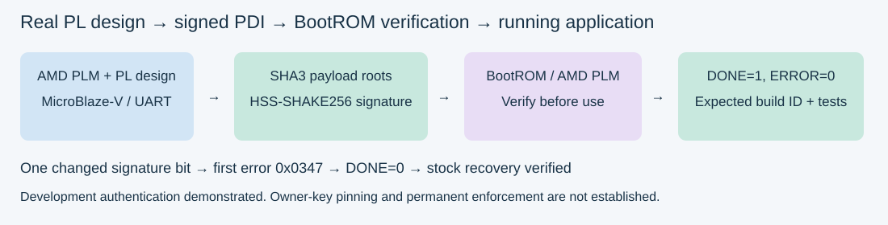
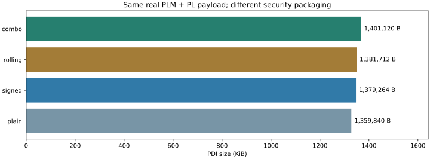

October 25, 2026. Real PL MicroBlaze-V crypto application; stock AMD PLM; no eFUSE or flash writes.
Main live image: combo.pdi. HSS-SHAKE256 signatures, AES-256-GCM encryption and rolling keys. Hardware: DONE=1, ERROR=0; 31 application rows, 10 hash vectors, 5 AES vectors and stock recovery validated.
The AES root is deliberately public and all-zero. This proves the configuration mechanism on this loaner, not confidentiality with a secret production key. Owner-pinned trust and permanent enforcement are not established.



| Image | DONE | Raw error | First error | App completed | Stock restored |
|---|---|---|---|---|---|
| plain | 1 | 0x0 | 0x0 | True | True |
| signed | 1 | 0x0 | 0x0 | True | True |
| badsig | 0 | 0x1a3b87df7defff | 0x347 | False | True |
| zero | 0 | 0x1c4b87df7defff | 0x389 | False | True |
| zero_mask | 1 | 0x200000 | 0x0 | True | True |
| badroll | 0 | 0x2c4b87df7defff | 0x589 | False | True |
| combo | 1 | 0x0 | 0x0 | True | True |
Signed tamper: exactly one signature bit changed, rejected with 0x0347. Controlled encrypted tamper: outer SHA3/AAD checks repaired with the known diagnostic root, inner GCM tag left invalid, rejected with 0x0589. A vendor description for 0x0589 has not been established.
Encryption-only zero_mask reached DONE and completed the app but latched SSS_CFG_ERR (0x200000); combined signed/encrypted image was error-free. Cause not established.
Full hardware summary · Independent image checks · Artifact manifest
Image bundle: C:\aiup\sec35\boot\builds\20261025T132320653245. Main PDI SHA256: 5b37b0553a6459b32859207d821c0d9dd3f31deb2e7b121a2548bffc1cc008cf.
PL implementation and source-bound timing/DRC evidence are reused from the existing October 24 design. This experiment repackaged those exact payloads with Bootgen 2026.1 and tested them through the existing Vivado 2025.2 hardware server.